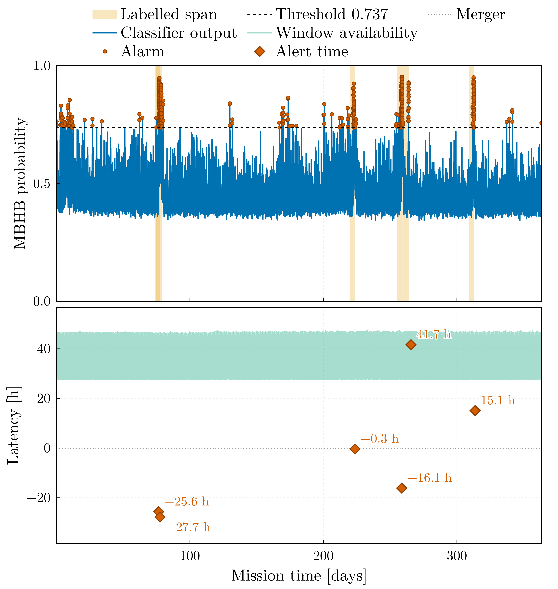
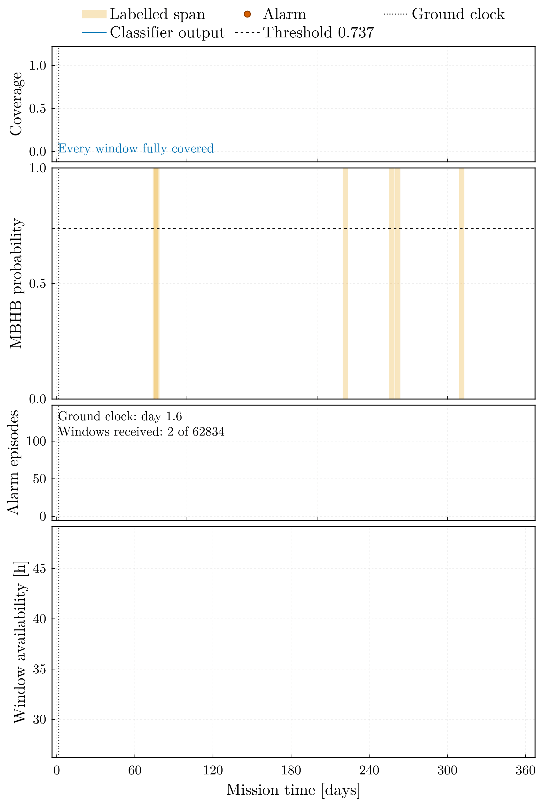
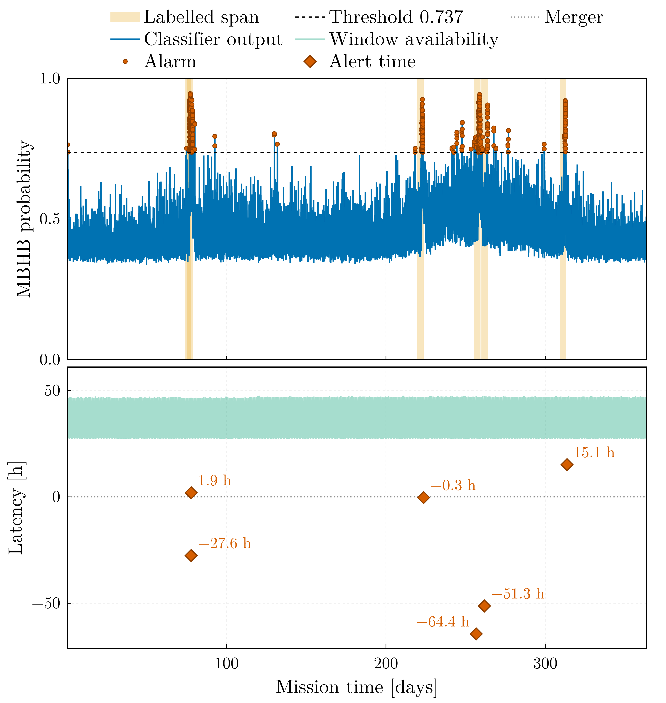
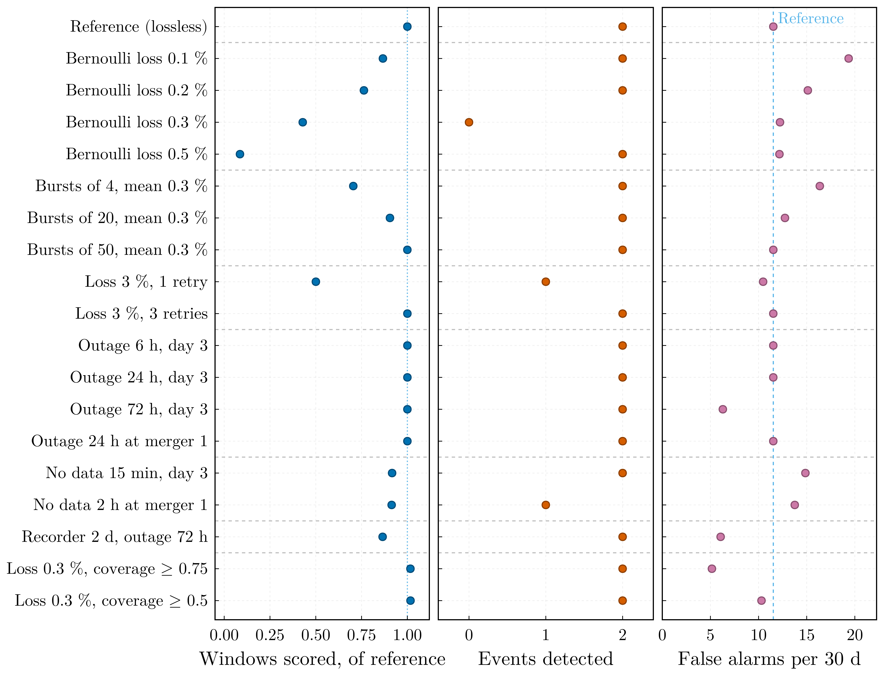
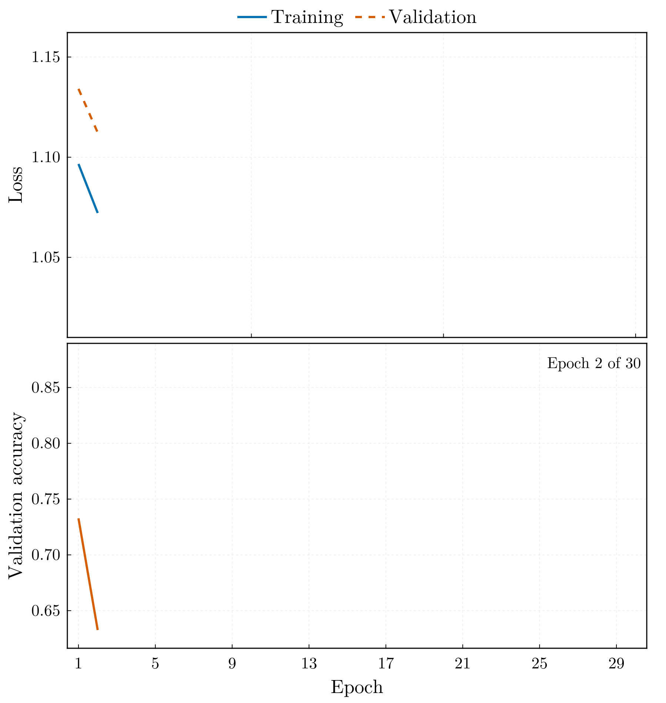

Results
The figures on this page summarise the results on the LISA Data Challenge 2a "Sangria" data set. The Sangria Benchmark page gives the protocol, every run, and the limits of each result; the decision thresholds are fitted on the training year and applied unchanged to the blind year.
Selected configuration, q8_b6 | Smoothed whitening, q8_b6_s001 | |
|---|---|---|
| Completed blind year: label spans, false alarms per 30 d | 5 of 5, 1.57 | 5 of 5, 2.97 |
| Streamed year, causal whitening: coalescences alerted on their own | 5 of 6 | 5 of 6 |
| Alerts reaching the ground more than an hour before the merger | 2, consistent with chance | 5, 12 to 71 h ahead |
| Streamed year: false alarms per 30 d | 1.90 | 0.16 |
| Conditioning lag of every alert | 1.16 days | 2.8 hours |
| Record scored at 0.43 % scattered batch loss | 9 % | 81 % |
The completed blind year

The selected model over the blind year, whitened by its full-record PSD, with the five labelled spans shaded. All five labelled events clear the threshold, at 1.57 false-alarm episodes per 30 days where the fit on the training year predicted 1.38. The bulk of the noise score rises between day 200 and day 300: the Galactic foreground seen through the rotating antenna pattern of the constellation. See the results of the grid.

The operating characteristic of the blind year, computed after the fact. Event recall stays at one up to the threshold fitted on the training year, so the operating point is set by the false-alarm rate alone.
Re-initialisation

The selected configuration at four initialisation seeds, each refitting its own threshold. Every seed recovers all five events; the delivered false-alarm rate spans 1.57 to 8.74 per 30 days, and the seed with the lowest fitted threshold is the one whose operating point does not transfer. See the spread under re-initialisation.

Every configuration of the grid at four seeds. The configurations with four or six sub-mHz bands recover all five events in every run, the two-band ones in two of eight; apart from the 2000-sample windows, near 26 false alarms per 30 days at every seed, the rates do not differ beyond the scatter between seeds, and the validation episodes, the selection statistic, cannot rank the configurations. See the grid over four seeds.
The streamed year

The blind year streamed through a simulated telemetry mission with daily ground-station passes and whitened causally, from data already delivered. Five coalescences are alerted on their own at 1.90 false-alarm episodes per 30 days; the lower panel gives the alert time of every coalescence at the ground station against the availability latency of every window, the wait for its conditioning stretch plus the downlink delay. See the telemetry replay.

The same replay in the order in which the ground station received the windows. The dotted line is the ground clock; its distance from the edge of the received data is the availability latency.

The same mission whitened by the full-record PSD of the blind year, which no mission has while it observes: a non-causal upper reference, at 1.32 false-alarm episodes per 30 days.
A lossy link

Seventeen 30-day missions, each differing from a lossless reference in one property of the channel or the spacecraft, replayed with the selected model. Scattered permanent loss is what removes windows; bursts, retransmission and outages remove few or none. See the effect of a lossy link.

A window is scored only once its whole conditioning stretch of 410 batches has arrived, so the scorable fraction follows (1 − p)^410 and collapses beyond about 0.2 % of permanently lost batches.
Smoothed whitening

The model retrained on a Welch whitening spectrum smoothed by 0.01 dex in log-frequency needs a conditioning stretch of 50 batches instead of 410. Streamed under causal whitening it alerts five of the six coalescences at the ground station 12 to 71 hours before their merger, at two false-alarm episodes in the year, where about 0.1 are expected by chance inside the label spans; at 0.43 % scattered loss it still scores 81 % of the record. See smoothed whitening.
Training

The training history of the selected run, epoch by epoch, with the checkpoint selected by early stopping on the validation block.